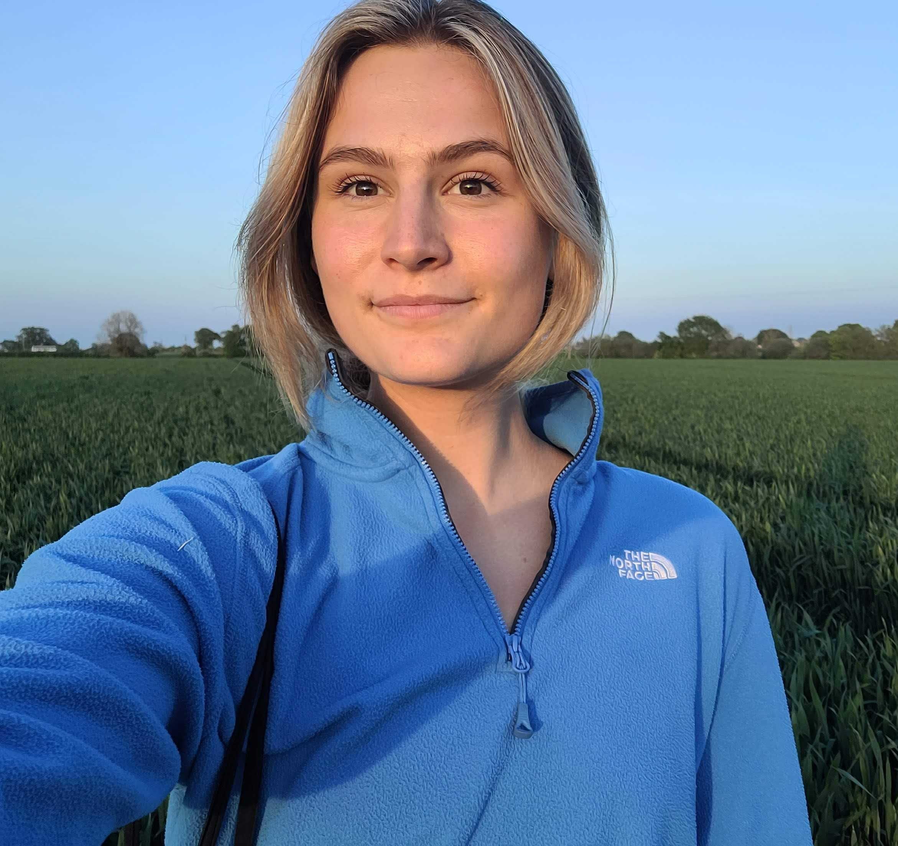

PhD Candidate · Department of Communication and Media Research (IKMZ) · University of Zurich
Eva-Maria Vogel is a doctoral researcher whose work explores the societal impact of political social media influencers on youth political engagement across platforms. As part of a comparative project spanning the US, Germany, and Poland, she uses computational methods to examine how digital influencers shape political communication and mobilization. With a background in political psychology and science communication, her research sits at the intersection of technology, credibility, and public discourse.
Publications
Conference Presentations
Media Coverage
Slides
Code